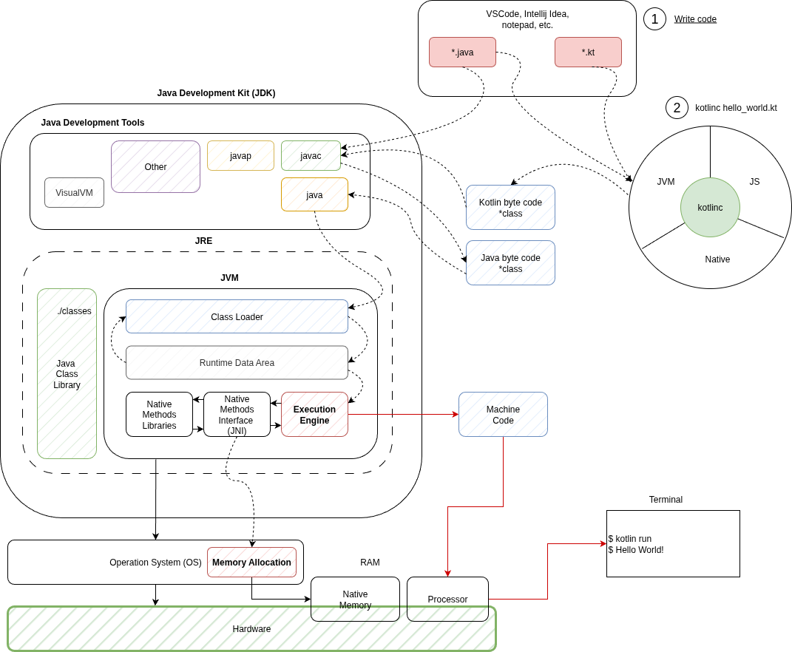

Основы языка Kotlin
Цели создания виртуальной машины Java (JVM)
Виртуальная машина Java (JVM) была разработана компанией Sun Microsystems, а ключевую роль в ее создании сыграл Джеймс Гослинг. Позднее Sun Microsystems была приобретена компанией Oracle. Слоганом компании является Write once, run anywhere (WORA).
JVM, если кратко - это интерпретатор байт-кода Java. Главной особенностью JVM является возможность компиляции и запуска програм на, практически, любой платформе, не меняя при это код Java (сильно упращая жизнь разработчикам ПО).


JVM может быть установлена на любую операционную систему (Windows, macOS, Unix-like, и т.д.). Таким образом, позволяя написать код один раз, но работать он будет на нескольких операционных системах.
Архитектура взаимодействия Kotlin с JDK (Java Development Kit)
Виртуальная машина Java является некой прослойкой между программным кодом и операционной системой:

Компилятор языков программирования Java и Kotlin преобразует пользовательскую программу в, так называемый, байт-код. Данный байт-код уже понимает виртуальная машина Java (JVM) Ниже рассмотрим более подробно этапы компиляции и запуска приложения, написанного на языке Kotlin (Kotlin + JVM).

Кратко по каждому блоку:
Инструменты разработки
Java (JDT)- это набор расширений рабочей среды, с помощью которого можно редактировать, компилировать и запускать программы на Java. 1.1javac- компилятор языка Java. Преобразует*.javaв байт-код*.class; 1.2javap- дизассемблер языка Java. Применяет обратную опереациюjavac, преобразует*.classв понятный человеку формат; 1.3VisualVM- удобная утилита для визуализации, мониторинга, профилирования приложений Java; 1.4Other- набор доп. инструментов (Basic Tools, Security Tools, Monitoring and Troubleshooting Tools, Deployment Tools, etc.);Kotlin Multiplatform- включает в себя компилятор для разны сред разработки (JVM, JS, Native); 2.1kotlinc- компилятор языка Kotlin. Преобразует*.ktвбайт-код, понятныйJVM. 2.2 etc.JRE (Java Runtime Environment)- среда выполнения Java. Необходима для запуска программ. Состоит из: 3.1 Виртуальной машины Java (JVM) - сердце работы программ; 3.2 Стандартная библиотека классов Java (java.io,java.lang,java.math,java.net, etc.).
Байт-код
Запустим Intellij Idea, создадим простой проект для демонстрации компиляции из *.kt в *.class.
В созданном проекте откроем файл /src/application.kt (создается по умолчанию, если не менять настройки). Добавим немного кода:
fun main(){ // Точка входа в программу
var number_01: Int = 10
var number_02: Int = 30
println(number_01)
println(number_02)
number_01 *= 2
number_02 += 20
println(number_01)
println(number_02)
println("Hello world!")
}
С помощью встроенных инструментов Intellij IDEA (Tools -> Kotlin -> Show Kotlin Bytecode) получаем дизассемблированный байткод.
// ================ApplicationKt.class =================
// class version 52.0 (52)
// access flags 0x31
public final class ApplicationKt {
// compiled from: application.kt
@Lkotlin/Metadata;(mv={2, 2, 0}, k=2, xi=48, d1={"\u0000\u0008\n\u0000\n\u0002\u0010\u0002\n\u0000\u001a\u0006\u0010\u0000\u001a\u00020\u0001\u00a8\u0006\u0002"}, d2={"main", "", "HelloKotlin"})
// access flags 0x19
public final static main()V
L0
LINENUMBER 3 L0
BIPUSH 10
ISTORE 0
L1
LINENUMBER 4 L1
BIPUSH 30
ISTORE 1
L2
LINENUMBER 5 L2
IINC 1 20
L3
LINENUMBER 7 L3
GETSTATIC java/lang/System.out : Ljava/io/PrintStream;
ILOAD 0
INVOKEVIRTUAL java/io/PrintStream.println (I)V
L4
LINENUMBER 8 L4
GETSTATIC java/lang/System.out : Ljava/io/PrintStream;
ILOAD 1
INVOKEVIRTUAL java/io/PrintStream.println (I)V
L5
LINENUMBER 9 L5
RETURN
L6
LOCALVARIABLE number_01 I L1 L6 0
LOCALVARIABLE number_02 I L2 L6 1
MAXSTACK = 2
MAXLOCALS = 2
// access flags 0x1009
public static synthetic main([Ljava/lang/String;)V
L0
INVOKESTATIC ApplicationKt.main ()V
RETURN
L1
LOCALVARIABLE args [Ljava/lang/String; L0 L1 0
MAXSTACK = 0
MAXLOCALS = 1
}
На данный момент не очень понятны команды BIPUSH, ISTORE, ILOAD и т.д.
Для этого необходимо немного погрузиться в кухню Java Virtual Machine.